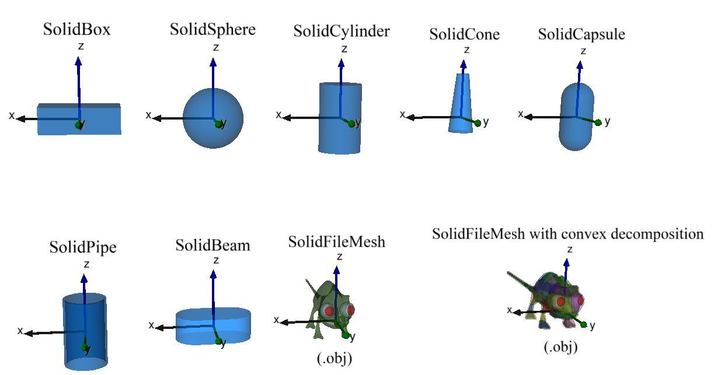
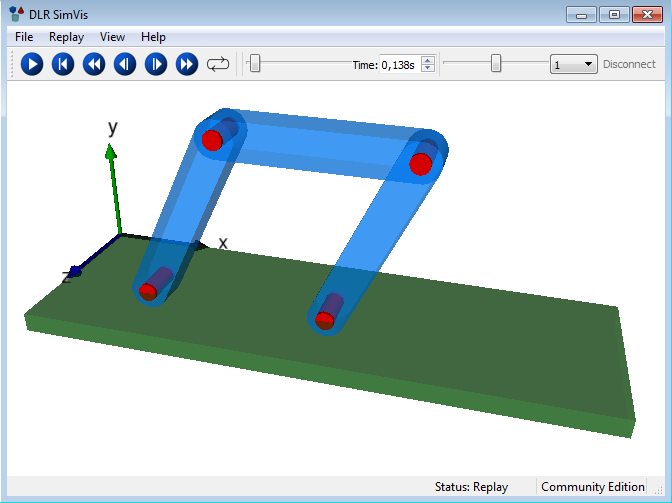

Modia3D
Modia3D is a Julia package to model fixed and moving objects in 3D (e.g. visual shapes, rigid bodies). These objects are driven kinematically by pre-defined time functions or are moving dynamically by solving Differential Algebraic Equations (DAEs) with a variable-step DAE solver.
Collision handling with elastic response calculation is performed for objects that are defined with a contact material and (a) have a convex geometry, or (b) can be approximated by a set of convex geometries, or (c) have a concave geometry that is (automatically) approximated by its convex hull. Papers about Modia3D:
Collision Handling with Variable-Step Integrators (EOOLT 2017, December)
Component-Based 3D Modeling Combined with Equation-Based Modeling, accepted for publication at the American Modelica Conference 2018, October 9-10
Before releasing version 1.0, Modia3D shall be easily combinable with Modia, for example to define a controlled electrical motor with Modia, and add 3D behavior/visualization with Modia3D. By this approach the best of both worlds can be combined: Special 3D algorithms (Modia3D) + power/flexibility of equation based modeling (Modia).
Package Features
A 3D object is an instance of struct Modia3D.Object3D and defines a coordinate system moving in 3D together with associated data and properties. The following Object3Ds are currently supported:
Object3Ds with a solid part
Solid parts can be associated with a Modia3D.Object3D. They are defined with struct Modia3D.Solid consisting of an optional solid geometry:

and other optional properties:
mass propreties (defined by geometry+material-name, geometry+density, or directly defined mass properties),
contact material (for elastic response calculation),
visualization material (for visualization, see below).
Since the solid geometry itself is optional, it is possible to just define a coordinate system with associated mass and inertia matrix.
The following functions are provided for a solid geometry geo that is associated with an Object3D object3D:
volume(geo),
centroid(geo),
inertiaMatrix(geo, mass),
boundingBox(geo, <other arguments>),
supportPoint(geo, <other arguments>),
isVisible(object3D, renderer),
hasMass(object3D),
canCollide(object3D),
and other functions.
Object3Ds for visualization
Visualization elements that have a visualization material:

A visualiziation material has the following attributes:
color (name or rgb-value),
wireframe (false/true),
transparency (0.0 is opaque, 1.0 is fully transparent),
reflectslight (false/true),
shininess (0.0 is matte surface, 1.0 is very shiny),
shadowMask (defines whether or not an object casts or receives shadows)
Visualization elements that have no visualization material:

It is planned to support all other visualization elements that are available in the DLR Visualization library (see videos of this library).
Constraints on Object3Ds
An Object3D can be either fixed or freely moving with respect to another Object3D. In the latter case, the movement is described by relative quaternions.
Furthermore, two Object3Ds can be connected together via various joint types. Currently, revolute and prismatic joints are supported. In the near future, more joint types will be added.
Assemblies of Object3Ds
Object3D definitions can be collected together with the Modia3D.@assembly macro in hierarchical structures. For example, in the following four bar mechanism (consisting of 3 bars and the ground as 4th bar), a bar is defined as an assembly consisting of a light-blue SolidBeam Object3D and two red Cylinder Object3Ds. Such a bar is then in turn assembled in the assembly FourBar shown below:

There are the following operations on an instance of an assembly:
Modia3D.visualizeAssembly!(assembly)to visualize the initial configuration of the assembly without simulating anything.Modia3D.SimulationModel(assembly; analysis=xxx, <other arguments>)to generate asimulationModelof the assembly that can be simulated withModiaMath.simulate!. Theanalysiskeyword defines which analysis shall be carried out on the model. Currently supported areKinematicAnalysisto kinematically move the assembly, orDynamicAnalysisto solve the equations of motion of the assembly. In the future it is planned to supportQuasiStaticAnalysisas well.
Main developers
Andrea Neumayr and Martin Otter
DLR - Institute of System Dynamics and Control
License: MIT (expat)